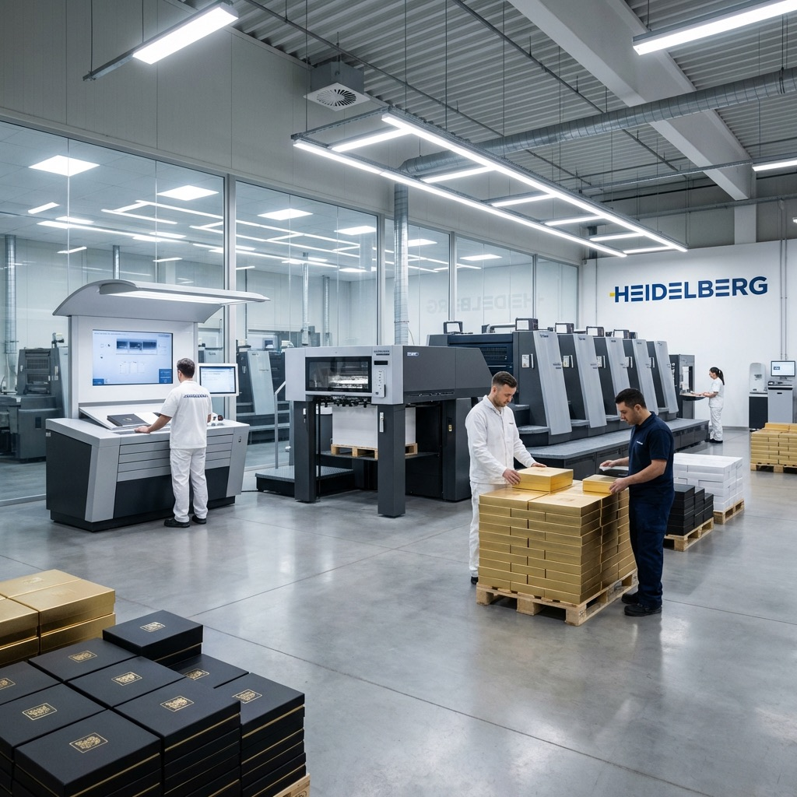

Short answer
Build production artwork on the supplier's final controlled dieline.
Concept graphics can begin before every structural decision is fixed, but production artwork should follow the actual product, final dimensions, opening direction, material construction, manufacturing process, and supplier. A dieline copied from a template library or an old box can support exploration; it does not prove compatibility with a new cutting die, wrap method, insert, machine, or printer.
Before release, confirm that the dieline is at the stated scale and revision, each panel and flap is identified, artwork extends only where required, critical copy and barcodes remain within approved areas, and every print or finishing operation is unambiguous. Retain an editable master, a production PDF or supplier-requested output, the approved proof, and the signed physical reference where applicable.
A mockup is not a production file. A 3D image can communicate concept and panel hierarchy, but it cannot define cut paths, folds, material buildup, wrap turns, glue zones, plate separations, finishing tolerances, or loaded performance.
What designers keep asking
Reddit discussions reveal the same production gaps.
Recent questions repeatedly involve missing supplier dielines, converted files at the wrong scale, unclear bleed, mixed structural and artwork layers, panel orientation, and incomplete production handoff.
- Designing without the manufacturer's dielineA current discussion asks whether a physical box can be reverse-engineered and how much tolerance to assume. Prepress replies emphasize using the final provider dieline before production release. Read the discussion.
- Bleed and converted-file scaleA 2026 box-artwork thread highlights artwork beyond the cut line, separate dieline layers, linked or embedded assets, and the risk of scale changes when converting CAD files. Review the thread.
- Professional dieline contentDesigners identify clear cut, crease, bleed, safe, glue, panel-orientation, dimension, annotation, and artwork layers as signals that a dieline leaves less room for interpretation. Read the discussion.
- Printer-specific workflowAnother recent discussion notes that the production vendor may require its own dieline because machinery, process, prepress, and converting—not the visual design alone—determine the final file. Review the workflow discussion.
Community replies are useful workflow signals, not universal prepress specifications. Use the selected printer's current requirements for bleed, spot-color names, overprint, trapping, resolution, PDF settings, proofing, and finishing clearance.
Dieline anatomy
Make every structural path and panel understandable.
The exact information depends on whether the pack is a folding carton, corrugated mailer, rigid setup box, wrapped insert, label, sleeve, tube, bag, or another converted format.
| Control | What it should communicate | Failure if unclear |
|---|---|---|
| Scale and dimensions | Drawing scale, units, finished internal or external dimensions, panel sizes, material or board buildup, and revision. | Artwork and product fit are approved on a file that does not match the manufactured pack. |
| Cut paths | Outer profile, windows, holes, slits, notches, tear features, and separate parts using the printer's required line convention. | Printable graphics are mistaken for tooling paths or a production cut is omitted. |
| Crease and fold | Scores, reverse folds, hinges, wrap turns, rolled edges, corner joints, and fold direction where relevant. | Copy crosses a stress area, panels rotate incorrectly, or finishing conflicts with a fold. |
| Panels and orientation | Front, back, sides, lid, base, top, bottom, inside, outside, reading direction, opening sequence, and product orientation. | Text appears upside down, hidden, split by a seam, or visible in the wrong stage of opening. |
| Glue and non-print | Glue tabs, adhesive zones, tape or magnet areas, seams, overlaps, closures, contact restrictions, and areas not suitable for ink or finish. | Ink or coating reduces adhesion, or critical graphics disappear under assembly parts. |
| Bleed and safe areas | Supplier-defined extension beyond trim and project-specific clearance from cuts, folds, seams, wrap turns, edges, and finishing. | Unprinted edges, clipped copy, unstable alignment, or visibly uneven spacing after conversion. |

Responsibility map
Keep structural, visual, prepress, and legal approvals distinct.
- Brand or product owner: owns product facts, approved copy, claims, market requirements, barcodes, trademarks, and final release authority
- Structural designer: develops the package around product, material, process, opening, loading, packing, and transport needs
- Graphic designer: maps the brand system and copy to the controlled panels, artwork layers, and orientation
- Printer or converter: supplies production requirements and preflights the file for the selected material, equipment, print, finishing, and conversion route
- Qualified reviewer: checks legal, regulatory, language, barcode, accessibility, sustainability, or market-specific content where required
Prepress can identify technical file problems, but it should not be assumed to approve the truth, legality, or market suitability of brand copy. Name the person responsible for each content layer.
Controlled workflow
Move from product to artwork release in six gates.
Do not lock visual artwork around a structure that is still changing.
Freeze the load
Record dimensions, variation, weight, orientation, accessories, protection, removal, packing, and shipping route.
Approve the blank
Use a physical structural sample to confirm fit, opening, closure, folds, insert, assembly, and external dimensions.
Issue one revision
Identify scale, panels, paths, seams, non-print areas, material assumptions, and all separate components.
Map controlled layers
Place copy, images, colors, white ink, finishing, codes, and version data with required clearances.
Check output
Review dimensions, links, fonts, images, color spaces, separations, overprint, transparency, PDF settings, and missing elements.
Release named evidence
Sign the proof and required physical sample, record limitations, then freeze filename, revision, date, and approver.
Layer system
Separate what prints from what makes the package.
Layer and spot-color names must follow the selected provider's workflow. A clear working file often separates the following operations so no screen-only guide becomes printable and no finishing plate is merged into process artwork.
- dimensions and annotations kept non-printing;
- cut, crease, perforation, score, window, and other tooling paths;
- glue, seal, magnet, tape, seam, wrap overlap, and non-print areas;
- process-color artwork and each required spot color;
- opaque white, primer, flood coat, or backing layers where applicable;
- foil, emboss, deboss, spot varnish or UV, texture, and other finishing plates;
- variable data, barcode areas, lot/date-code zones, and printer notes.
Never guess overprint behavior. White ink, foil, varnish, dielines, black objects, and trapping may require different output rules. Ask prepress to confirm separations and inspect the output preview.
Production file
Preflight every asset, not only the PDF preview.
A file can look correct on one computer while missing a font, linked image, profile, spot separation, transparency result, or updated barcode.
| Asset | Check | Control |
|---|---|---|
| Document | Artboard, scale, units, dieline revision, panels, hidden objects, clipping masks, effects, transparency, and output preset. | Export a requested production format without rescaling or changing the structural drawing. |
| Images | Missing or modified links, embedding status, effective resolution at placed size, color space, clipping, channels, compression, and usage rights. | Package allowed links or embed as agreed; keep the editable source and final placed version. |
| Fonts and text | Missing fonts, licensing, live-text edits, outlining, minimum reproduction, reversed text, language, spelling, and variable copy. | Retain an editable master and deliver fonts or outlined final text only as permitted and requested. |
| Color | Process and spot definitions, profiles, rich black, total ink or coverage limits, substrate color, white ink, transparency, overprint, and physical targets. | Use the provider's color and output requirements; approve production-relevant evidence on the intended material. |
| Finishes | Vector plate artwork, minimum detail, clearance, trapping, registration, seams, folds, wrap turns, texture, and conflict between operations. | Keep each finish separate, named, measurable, and reviewed on a relevant proof or sample. |
| Codes and content | Barcode data, quiet zones, contrast, size, orientation, lot/date area, mandatory copy, symbols, claims, contact details, and market version. | Obtain content-owner approval and verify the printed or applied code in its final context. |
Proof hierarchy
Approve the evidence that can prove the decision.
- Screen PDF: layout, copy, panel orientation, layer intent, and version review—not physical color or material
- Output or separation proof: plates, spot colors, finishing masks, overprint, trapping, and missing-object checks
- Color proof or drawdown: an agreed prediction or material/ink reference within its stated limitations
- White structural sample: dimensions, folds, closure, loading, product fit, removal, and assembly
- Printed converted sample: structure, material, artwork, color, finish, folds, seams, and assembly together
- Production first article: output from the intended bulk route checked before the run continues where agreed
Use the packaging sample approval checklist to record what was approved and what remains conditional.
Artwork ownership
Keep editable masters and production records portable.
A brand should be able to trace how a production PDF relates to its editable source, supplied assets, printer dieline, approved proof, and physical sample.
Retain editable source
Keep licensed fonts, linked images, color references, copy source, barcode data, and editable print and finish layers under controlled access.
Name the production file
Use project, SKU, market, dieline revision, artwork revision, and release date so an obsolete file cannot be mistaken for the approved version.
Connect proof to output
Archive the approved PDF, separation report, proof, sample photos, signed notes, printer changes, and retained production sample together.
Define ownership, editing rights, font and image licenses, tooling files, supplier-created adjustments, storage period, and access before a relationship or production route changes.
Artwork handoff checklist
Send the supplier a controlled package, not a mystery attachment.
- final supplier dieline with revision, scale, units, dimensions, material construction, panels, orientation, cut, crease, glue, seam, overlap, and non-print zones;
- editable artwork master plus requested output PDF or format, with print and finish layers named to supplier requirements;
- all permitted linked assets or agreed embedded files, font treatment, licenses, image resolution, profiles, and physical color references;
- approved copy source, language and market, barcode data, variable fields, regulatory review, claims evidence, and named content owner;
- proof and sample requirements, known limitations, preflight changes, approver, filename, revision, release date, and obsolete-file controls;
- quantity by SKU, print version, finish version, sample route, production date, inspection needs, packing, destination, and repeat-order reference.
Send GloryStarPack the product dimensions, box style, quantity, reference image, existing dieline, editable logo or artwork, destination, and target date. We can identify which structural and prepress inputs are still needed before a production dieline or sample is approved.
Primary guidance
Use current software and barcode guidance, then confirm the printer workflow.
Software functions support file preparation; they do not determine the correct structure, material, process, or production tolerance for every supplier.
- Bleed and printer marksAdobe defines bleed as artwork outside the crop or trim area and advises users to obtain the necessary bleed size from the print provider for the particular job. Review Adobe's guidance.
- File packagingAdobe's Illustrator Package function can collect the document, linked graphics, permitted fonts, and a report that identifies missing fonts, links, spot colors, and image details. Review the handoff workflow.
- Linked and embedded assetsAdobe distinguishes linked files that update from a source and embedded assets stored inside the document; the selected handoff route should match the printer's editing and output needs. Read the current Links guidance.
- Barcode placementGS1 notes that placement within packaging artwork affects scanner access and overall readability. Use the applicable GS1 specification and verify the code in the finished package context. Review the GS1 playbook.
Dieline and artwork FAQ
Questions to settle before production release.
Use these answers to define the workflow, then apply the selected printer's project-specific requirements.